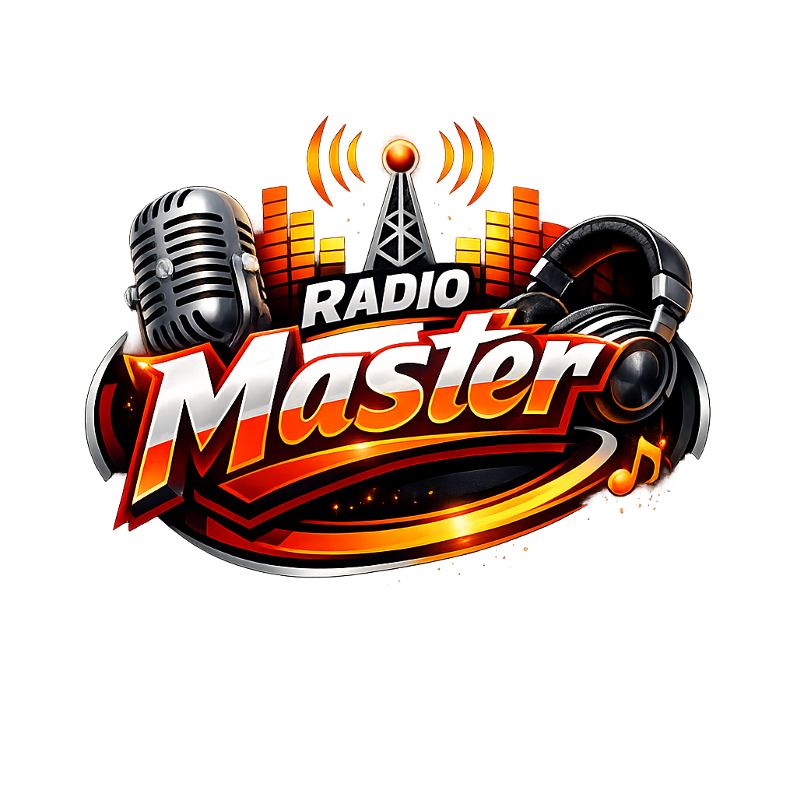

▶
PRÓXIMAMENTE
Reflexiones
Palabras para tu día.

Un espacio para escuchar, aprender y compartir.
Muy pronto, nuevas experiencias para vos.
PRÓXIMAMENTEUn momento para reflexionar.
Palabras para tu día.
Fragmentos de nuestros programas.
Una palabra que puede acompañarte cada día.
A veces no comprendemos por qué suceden ciertas cosas ni hacia dónde nos está llevando Dios. Sin embargo, confiar también significa caminar aun cuando no tenemos todas las respuestas.
"Porque por fe andamos, no por vista." 2 Corintios 5:7
Nuestra fe no depende de tener todo resuelto, sino de conocer a Aquel que guía nuestros pasos.
Estamos preparando nuevos devocionales para compartir.
Todo lo que necesitás saber sobre La Hora Master.
Nuestra radio transmite música y contenidos para acompañarte durante el día.
Sábados
Villa Larca · 95.5 FM
Próximamente publicaremos más horarios y días de contenido.
La Hora Master nació con el deseo de comunicar, compartir enseñanzas y crear un espacio donde las personas puedan escuchar, aprender y crecer.
A través de la radio, los programas y los contenidos digitales, queremos seguir llegando a más personas.